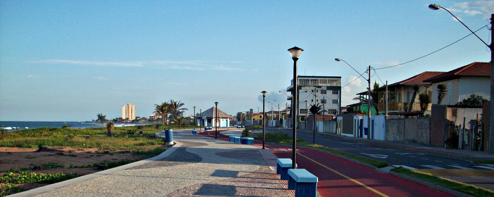

Sobre a Praia
Jacaraípe tem origem na antiga aldeia de pescadores denominada Aldeia de Caraípe. Assim a origem da palavra Jacaraípe nada tem a ver com Jacaré e rio dos Jacarés e, sim, com Caraípe que se origina da língua Tupi, usada pelos índios primeiros habitantes da região e que significa “Caminho do Homem Branco”.
